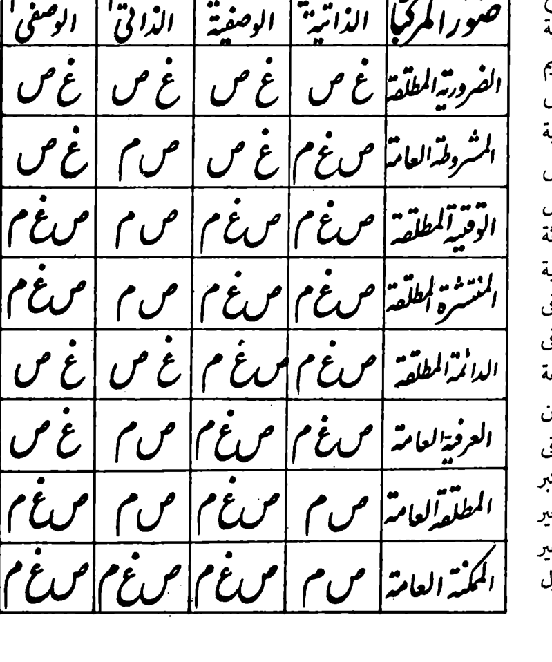

Four recovered tables in the original print
Scope is deliberately narrow. These four historical table images were recovered from photographed Qum printings of the later glosses (ḥawāshī), not from a medieval manuscript of al-Taftāzānī’s original matn. A readable image is not automatically a transcribed or translated table. Only the Q300 32 status symbols have been individually verified in full.
Two scanned printed editions were inspected: H-1405 printing and H-1433 printing. Print-to-PDF page offsets, SHA256 file identities and excerpt bounds are recorded in the image provenance manifest.
Q258 · 49 definitional combinations
The seven kinds of definitional elements form an actual, fully drawn 7×7 table, not merely a structure inferred from prose. The original labels are species, proximate genus, remote genus, proximate differentia, remote differentia, common accident and proprium. The many written explanations within the 49 intersections still require exhaustive diplomatic transcription.

Source: Q258 digital prose; printed 1405 page + PDF index 259 (zero-based); crosscheck 1433 PDF index 258.
Q294 · 105 modal-proposition relations
The full source has a triangular table comparing 15 kinds of modal propositions pairwise. The entries are **105 distinct upper-versus-lower relationships**, written in short Arabic symbols; the source prose at Q293 specifies their meaning and direction. Each printed symbol must be read separately before the table can be called transcribed.

مط inclusion, من overlap, ين disjointness; فم upper broader, حم lower broader. These are historical source codes, not modern notation.
Source: Q293 explanation; photographed Q294, 1405 scan index 295, 1433 scan index 294.
Q300 · 32 individually checked modal-compound statuses
The Stage115 prose-based eight-by-four reconstruction has now been checked against the actual printed cells in both scans. Below, **R** is valid recognised (صحيح معتبر), **U** valid unrecognised (صحيح غير معتبر), and **X** invalid (غير صحيح).
| Simple proposition | اللاضرورة الذاتية | اللاضرورة الوصفية | اللادوام الذاتي | اللادوام الوصفي |
|---|---|---|---|---|
| الضرورية المطلقةAbsolute necessary | X | X | X | X |
| المشروطة العامةGeneral conditioned | U | X | R | X |
| الوقتية المطلقةAbsolute temporal | U | U | R | U |
| المنتشرة المطلقةAbsolute diffuse | U | U | R | U |
| الدائمة المطلقةAbsolute permanent | U | U | X | X |
| العرفية العامةGeneral customary | U | U | R | X |
| المطلقة العامةGeneral absolute | R | U | R | U |
| الممكنة العامةGeneral possible | R | U | U | U |
7 R · 16 U · 9 X = 32 verified symbols. These are historically printed classification judgments, not independently valid modal theorems across all possible worlds.

Q309 · Fifteen conditional structures and original examples
All nine ordered connected forms and all six unordered disjunctive forms are present. In the connected table, three source cells intentionally give “ذكر ما لا يخفى” rather than a worked example, namely C/C, K/K and D/D. The remaining twelve example cells contain Arabic exemplars whose exact bilingual transcription remains open.
Nine connected (متصلة)
| # | Type | Printed example state |
|---|---|---|
| 1 | C/C | Printed instruction only |
| 2 | C/D | Historical example printed — Arabic transcription pending |
| 3 | C/K | Historical example printed — Arabic transcription pending |
| 4 | K/C | Historical example printed — Arabic transcription pending |
| 5 | D/C | Historical example printed — Arabic transcription pending |
| 6 | K/K | Printed instruction only |
| 7 | K/D | Historical example printed — Arabic transcription pending |
| 8 | D/K | Historical example printed — Arabic transcription pending |
| 9 | D/D | Printed instruction only |
Six disjunctive (منفصلة)
| # | Type | Printed example state |
|---|---|---|
| 1 | C/C | Historical example printed — Arabic transcription pending |
| 2 | C/K | Historical example printed — Arabic transcription pending |
| 3 | C/D | Historical example printed — Arabic transcription pending |
| 4 | K/K | Historical example printed — Arabic transcription pending |
| 5 | D/K | Historical example printed — Arabic transcription pending |
| 6 | D/D | Historical example printed — Arabic transcription pending |
C categorical (حملية), K connected conditional (متصلة), D disjunctive conditional (منفصلة). In connected structures the left side of the slash is antecedent; the source order shown here follows the printed table, differing slightly from the Stage115 algorithmic row order.

Q387 · Earlier suspected figure is not printed
Q387 uses a deictic هكذا when explaining perpendicular lines, but neither inspected printing has a diagram on that page. This is a resolved missing-image false positive, not a newly restored diagram. No illustration was invented.
Completion boundaries
Print recovery: all four graphics and page alignment recovered. Photo-to-cell transcription: 32 Q300 symbols verified; 49 Q258 detailed judgments, 105 Q294 relation codes, and 12 Q309 examples remain for verbatim English alignment. Original translation: Stage114 inherited corpus still comprises 1,090 historically numbered records and is unchanged. Modal theory: the separate 46 exceptional syllogistic mixes still require original-semantics proofs, as documented in their distinct proof ledger.
Five-locus Arabic–English micro-audit · Full photographic source audit · Cumulative handoff